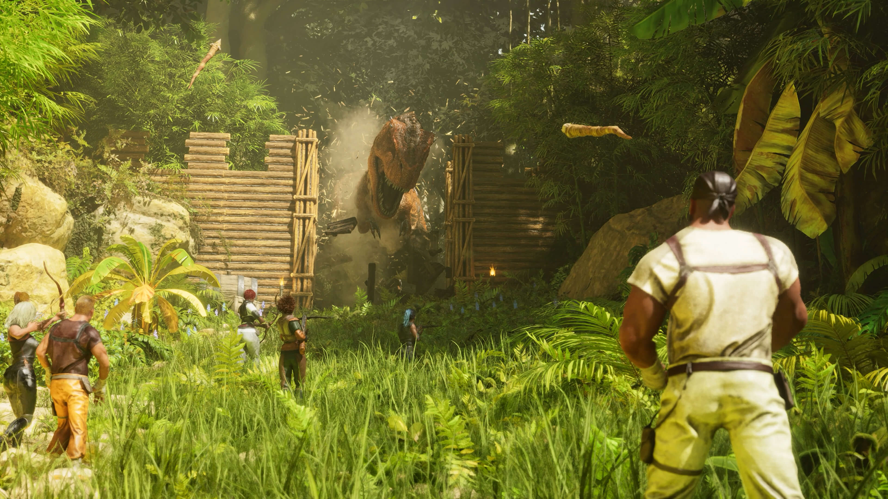

ARK: SURVIVAL ASCENDED
Reaparece en una nueva experiencia de supervivencia de dinosaurios más allá de tus sueños más locos... ¡mientras ARK se reinventa desde cero en la próxima generación de tecnología de videojuegos con Unreal Engine 5! Te despiertas en una isla misteriosa, tus sentidos abrumados por la cegadora luz del sol y los colores brillantes que rebotan en cada superficie a tu alrededor, las aguas azules de una isla verde lamiendo tus pies descalzos. Un rugido profundo resuena en la jungla brumosa, lo que te impulsa a actuar y te pones de pie, sin miedo, sino intrigado. ¿Estás listo para formar una tribu, domesticar y criar cientos de especies de dinosaurios y otras criaturas primitivas, explorar, crear, construir y abrirte camino hasta la cima de la cadena alimentaria? Tu nuevo mundo te espera... ¡atraviesa el espejo y únete a él!
CARACTERÍSTICAS:
● ARK: Survival Ascended ha recreado y rediseñado completamente el arte y los mundos de ARK para aprovechar lo último en tecnología de videojuegos, Unreal Engine 5, utilizando características gráficas de alta gama como la iluminación global totalmente dinámica (“Lumen”), para que la luz rebota de manera realista en las superficies y proporciona reflejos realistas, y una transmisión de malla avanzada ("Nanite") de cientos de millones de triángulos para obtener detalles extremos.
● Nuevos sistemas de física avanzados, como agua dinámica para que cada criatura cree ondas, ondas, salpicaduras y burbujas a medida que se mueven a través de fluidos, y follaje físico totalmente interactivo donde cada brizna de hierba, arbusto y árbol reacciona a personajes, explosiones y proyectiles. y objetos de física. ¡Derriba un árbol y observa cómo choca contra otros árboles y perturba todo el follaje en su camino hacia la hierba de abajo! Detecta a un enemigo que se mueve sigilosamente por la hierba mientras se mueve y se balancea en respuesta a su presencia. Derriba un edificio y observa cómo se rompen las piezas de manera realista, interactuando con la hierba y el agua a medida que caen.
● ARK: Survival Ascended incluye acceso a todos los mundos de ARK, incluidos Scorched Earth, Aberration, Extinction, ARK Genesis Part 1, ARK Genesis Part 2 y más. La isla ya está disponible y los mundos de expansión posteriores se agregarán de forma regular sin costo adicional.
● La experiencia de supervivencia definitiva regresa mejor que nunca: diseña tu Superviviente, forma una tribu y domestica, entrena, cría y monta dinosaurios dentro de un ecosistema vivo. Vigile sus patrones de comida, agua, temperatura y clima. Expande lentamente hacia afuera a medida que cosechas, construyes estructuras, cultivas, personalizas tus diseños visuales y continúas explorando para descubrir la verdadera naturaleza de La Isla y los mundos más allá.
● Renovaciones exhaustivas de la calidad de vida en todas las áreas: interfaces de usuario rediseñadas, navegación dinámica para encontrar caminos de criaturas inteligentes, bebés salvajes, modo de fotografía, nuevos sistemas de cámara, nuevo sistema de mapas, sistema de seguimiento, nuevas estructuras y elementos, nuevas criaturas y mucho más.
● Modificación multiplataforma: descarga y juega nuevo contenido personalizado creado por jugadores, incluidos nuevos mapas, criaturas, elementos y modos de juego, a través de un nuevo Mod-bowser dedicado directamente dentro del juego. ¡Disfruta de un flujo interminable de contenido nuevo de ARK mientras la creatividad y el talento de la comunidad se desata por completo por primera vez en todas las plataformas de juego!
● Multijugador multiplataforma: ¡forma tu tribu en línea a través de diferentes plataformas de juego mientras trabajas juntos para sobrevivir y prosperar en ARK!
● Admite modo multijugador público en línea para hasta 70 jugadores, modo multijugador de sesión privada para hasta 8 jugadores y pantalla dividida local para 2 a 4 jugadores.
IMÀGENES

